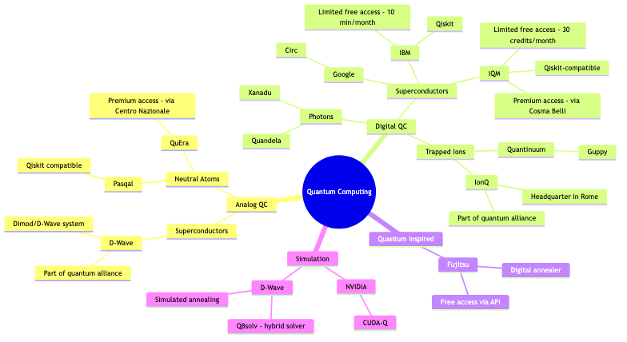

Approaches to Quantum Computing
Quantum Computing (QC) is all about tackling problems in a fundamentally different way compared to classical computing.
The core idea is to leverage the phenomena of quantum mechanics—like superposition and entanglement—to dramatically speed up the process of finding a solution.
Besides the goal of achieving faster results, the main hope is to be able to “express” more with quantum computers. This means having the right tools to represent and solve problems that are intrinsically non-classical. A classic example: running simulations of real-world quantum-level particle systems, which is currently impossible for even the largest classical supercomputers as systems get bigger.
Unlike classical computing, where the transistor-based architecture is the universal standard, we currently don’t have a single standard way of building a quantum computer. This means every vendor is proposing their own technique for doing quantum, each coming with its own set of unique pros and cons. It’s a very exciting hardware race!
These approaches can generally be categorized along two main axes:
- Type of Hardware Technology Used
- Superconductors (IBM, Google, IQM, DWave, Rigetti, …)
- Trapped ions (Quantinuum, IonQ, …)
- Neutral atoms (Pasqal, QuEra, …)
- Photons (Quandela, Xanadu, …)
- Semiconductor spin qubits (Intel, QuTech, …)
- Nature of the Computation
- Analog: The physical system described by the qubits evolves globally. Think of this as a direct quantum simulator, where the hardware naturally mirrors the problem you’re trying to solve.
- Digital: The physical system evolves locally, meaning we have precise control over individual qubits. This is the familiar quantum circuit model, like stringing together logic gates step-by-step.
- Mix (Often a combination of both, sometimes called a hybrid architecture).
A (Non-Exhaustive) Map of Quantum Computing

Analog Quantum Computing
When we talk about analog quantum computing, the main player is definitely D-Wave with its implementation of quantum annealing.
The core idea behind this type of machine is to create a tool capable of solving a very specific class of problems [not all of them!].
D-Wave’s computers are inherently designed for optimization tasks. The optimization problem is first encoded into the Quantum Processing Unit (QPU). After this setup phase, the system naturally evolves towards the state of lowest energy/minimum entropy, which magically represents the solution to the problem.

From CSPs to Annealing
Let’s imagine a generic Constraint Satisfaction Problem (CSP) in a minimization form:
$$\min f(x)\quad s.t.\quad Ax = b$$
The QPU can only natively solve problems in the QUBO format (Quadratic Unconstrained Binary Optimization). The problem shown above isn’t guaranteed to have only binary variables and definitely has constraints, so we need to transform it into a QUBO.
This can be done in two ‘simple’ steps (we say simple, but in practice, it can be quite tricky!):
- Binarize the variables (using the most appropriate encoding you choose).
- Use Lagrangian relaxation to incorporate the constraints as penalties within the objective function.
The resulting QUBO problem is essentially a square, upper-triangular matrix, and can generally be seen as \(\min x^\top Qx\), where \(Q\) is the matrix and \(x\) is the vector of binary variables.
Fun fact: Solving a generic QUBO is an NP-complete problem (yikes!!), which is why we need quantum speed-up for the toughest instances.
QUBO problems can easily be visualized as graphs—the matrix \(Q\) represents the weights of the connections (edges). The challenge is that the QPU for annealing has a fixed physical topology, usually represented by a sparse graph (like the Chimera or Pegasus graphs in D-Wave’s systems).
Before running the annealing process, you therefore need to map the problem’s logical graph onto the QPU’s fixed physical graph. This step is called minor embedding (and guess what? It’s also NP-complete!).
Digital Quantum Computing
When we talk about digital quantum computing, we are referring to the gate-based world. This is where most of the quantum players are found, and each vendor showcases its particular strengths:
- IBM: Focuses on the sheer number of qubits they can build (scaling up).
- Quantinuum (using trapped ions): Focuses on a low error rate (high fidelity).
- Google: Focuses on being able to demonstrate quantum advantage (solving a problem faster than the best classical machine).
What are Quantum Gates?
Unlike classical bits, qubits are much more complex objects because they exist in a superposition of states. Due to this complexity, most of the fundamental gates act as single-qubit operations . (In the classical world, bits are “just” on or off, and you combine them with gates like AND, OR, and NOT to compute.)
Here is a list of quantum gates (non-exhaustive, but they form a universal set):
-
Controlled-NOT (C-Not) Gate (The key 2-qubit gate for creating entanglement!):
$$\begin{bmatrix} 1 & 0 & 0 & 0 \ 0 & 1 & 0 & 0 \ 0 & 0 & 0 & 1 \ 0 & 0 & 1 & 0 \end{bmatrix}$$
-
Hadamard (H) Gate (The most famous gate—it puts a qubit into a perfect superposition):
$$\frac{1}{\sqrt 2}\begin{bmatrix} 1 & 1 \ 1 & -1 \end{bmatrix}$$
-
Phase (S) Gate (A single-qubit rotation):
$$\begin{bmatrix} 1 & 0 \ 0 & i \end{bmatrix}$$
-
T Gate (Also a single-qubit rotation, but a very specific one):
$$\begin{bmatrix} 1 & 0 \ 0 & e^{i\pi / 4} \end{bmatrix}$$
The first three gates (C-NOT, H, S) are part of the Clifford set and can actually be simulated fairly easily on a classical computer. However, the addition of the T gate is crucial because it makes efficient classical simulation impossible—it’s what gives the system its full quantum power!
Unlike analog systems (like annealing), these gates are universal, meaning they can theoretically express any type of quantum computation.
The presence of gates allows us to control individual qubits at every moment. This local control is what makes this type of computation “digital” (similar to how classical circuits work, just with far more powerful components).
Why Not Use Only Gates?
Long story short: you absolutely could, and people do! (For example, using a process called Trotterization to emulate annealing on a gate-based machine.)
The main issue is that current qubits are still few and highly prone to error (they are noisy). So, while gate-based systems are universal, they are still far from the performance levels you can achieve by using more specialized quantum computing approaches for specific tasks with tailor-made tools (like using annealing for optimization). We are waiting for better hardware!
Typical Gate-Based Problems
Quantum Kernel
Kernels have been used long before quantum computers came along. Their main purpose is to map examples (data points) into a higher-dimensional space, where classification tasks become much simpler.
They are famously used in Support Vector Machines (SVMs) to classify non-linearly separable data, and in Convolutional Neural Networks (CNNs) to extract features from images.
from qiskit_ibm_runtime import SamplerV2
from qiskit.circuit.library import zz_feature_map
from qiskit_machine_learning.kernels import FidelityQuantumKernel
from qiskit_machine_learning.state_fidelities import ComputeUncompute
sampler = SamplerV2(mode=backend) # Any backend, IBM, IQM, Simulation on CPU/GPU
FidelityQuantumKernel(
fidelity=ComputeUncompute(sampler=sampler),
# zz_feature_map is just one possible map
feature_map=zz_feature_map(feature_dimension=3, reps=2, entanglement='linear')
)

Quantum kernels simplify classification incredibly fast because they map the data into a space whose dimensions grow exponentially with the number of features (qubits) used. This exponentially large space is what potentially gives us a quantum advantage in Machine Learning!
Defining a ‘Good’ Kernel:
To be useful, a quantum kernel must strike a balance:
- Complex enough to be non-simulable: If it can be simulated efficiently classically, why bother with a quantum computer? Currently, this complexity often means it’s not yet efficiently executable on noisy real quantum hardware.
- Expressive enough to be helpful: Unlike classical kernels, quantum ones are formed by first building a feature map (which encodes the classical data into a quantum state) and then using that map in a compute-uncompute procedure (a neat trick that leverages the reversible nature of quantum operations!).
- The big question: How do we figure out if a feature map is actually good for a given dataset? This is a major area of research right now!
Grover Search
Grover’s algorithm is a quantum search algorithm designed for an unsorted set of items. Think of it like looking for a name in a phone book where the names are randomly scattered.
Intuitively, what the algorithm does is repeatedly sample the search space, but cleverly making the probability of measuring the target states collapse onto the desired examples. It’s essentially an amplitude amplification process.
from qiskit import QuantumCircuit
from qiskit.circuit.library import ZGate, MCMTGate
def grover_oracle(marked_states):
if not isinstance(marked_states, list):
marked_states = [marked_states]
num_qubits = len(marked_states[0])
qc = QuantumCircuit(num_qubits)
for target in marked_states:
rev_target = target[::-1]
zero_inds = [ind for ind in range(num_qubits) if rev_target.startswith("0", ind)]
qc.x(zero_inds)
# MCMTGate is a Multi-Controlled Multi-Target gate
qc.compose(MCMTGate(ZGate(), num_qubits - 1, 1), inplace=True)
qc.x(zero_inds)
return qc
marked_states = ["1000", "0100", "0010", "0001"] # These are the solutions we are looking for
oracle = grover_oracle(marked_states)
While incredibly useful and relatively easy to implement, Grover’s algorithm provides “only” a quadratic speed-up (it takes \(O(\sqrt{N})\) steps instead of \(O(N)\) classically). This is a big deal, but it means it doesn’t fundamentally change the complexity class of the problems it’s used for (unlike Shor’s algorithm, which we’ll see next!).
If you want to dive deeper, check out 3Blue1Brown’s excellent videos:
QAOA (Quantum Approximate Optimization Algorithm)
QAOA is a gate-based optimization method that also returns approximate solutions.
It falls under the family of Variational Quantum Algorithms (VQAs). This means the quantum circuit is parameterized (it has tunable knobs) and interacts with a classical computer in a loop to optimize those circuit parameters.
- Quantum Part: Runs the circuit and measures the output.
- Classical Part: Takes the measurement, calculates the cost (how good the solution was), and decides how to adjust the parameters.
Once the parameters are optimized, they allow us to get a high-quality “solution” to the problem.
from qiskit.quantum_info import SparsePauliOp
from qiskit.circuit.library import QAOAAnsatz
cost_hamiltonian = SparsePauliOp.from_list([('IZZ', 1.0), ('ZIZ', 1.0), ('ZZI', 1.0)])
circuit = QAOAAnsatz(cost_operator=cost_hamiltonian, reps=2).decompose(reps=2)
circuit.measure_all()

The circuit structure is straightforward, but performance tends to degrade significantly as the problems get larger. This is a common issue with VQAs on current-generation hardware.
There are alternatives, such as NDAR or Trotterization (which we mentioned earlier), that researchers are developing to try and improve on QAOA’s performance.
Shor Factorization
Shor’s algorithm is probably the most famous one when discussing quantum computing.
The reason it’s so popular (and feared) is that it dramatically changes the complexity class of factorization: from a presumed exponential time to poly-logarithmic time. This is the ultimate “game-changer” for cryptography, as it would break the widely used RSA encryption scheme.
Shor’s algorithm for factoring the number 15

Currently, there are no readily available, pre-built implementations of Shor’s algorithm that can factor large numbers, and the algorithm itself is constantly being improved and optimized in academic literature.
In the literature, there are also other algorithms besides Shor’s that are presumed to be better.
The main issue with Shor’s algorithm is that it requires (to factor RSA-2048) at least 1 million noisy qubits (until last year, it needed 20 million).
Analog/Digital Quantum Computing (Neutral Atoms)
The neutral atom approach (or cold atom approach) seems really promising because of several key advantages:
- Works at room temperature: Unlike superconducting qubits (which need near absolute zero), neutral atom systems can operate without needing super expensive cryogenics. This is a huge practical advantage!
- Compact setup: Everything the quantum computer needs to function can be contained in a relatively small space.
- Easier local control: It should allow for more straightforward local control (controlling individual qubits) compared to pure annealing systems.
- Free topology: Unlike annealing-based QPUs (which have fixed, sparse connectivity), the qubit topology here is free (or reconfigurable). This means you can arrange the qubits in 1D, 2D, or 3D lattices, which is fantastic for matching the problem structure to the hardware.
However, there are still some major challenges:
- Scalability uncertainty: We don’t yet know how far this technology can scale in terms of total qubit count and performance.
- Atom positioning: Accurately and stably positioning the atoms using laser pulses (optical tweezers) remains an NP-complete problem. Getting those atoms where you need them, every single time, is tricky!
We can also run QAOA on this architecture, but I haven’t looked into the specific details yet. Recently, a simulator was released that allows for prototyping, keeping their quantum backend in mind, which is a big step for developers.
Quantum backends
IBM quantum
def get_quantum_backend():
from qiskit import generate_preset_pass_manager
from qiskit_ibm_runtime import QiskitRuntimeService
backend = QiskitRuntimeService(channel='ibm_cloud', token=TOKEN_IBM, instance=CRN_IBM).least_busy()
pm = generate_preset_pass_manager(backend=backend, optimization_level=3)
return backend, pm
IBM CPU
def get_classical_backend():
from qiskit_aer import AerSimulator
from qiskit import generate_preset_pass_manager
backend = AerSimulator(method='matrix_product_state')
pm = generate_preset_pass_manager(backend=backend, optimization_level=3)
return backend, pm
IQM quantum
# Adapter to use IQM backend with pre-exhisting Qiskit code
def get_iqm_quantum_backend():
from types import SimpleNamespace
from iqm.qiskit_iqm import IQMProvider, transpile_to_IQM
backend = IQMProvider(SERVER_IQM, token=TOKEN_IQM).get_backend()
run = lambda x: transpile_to_IQM(x, backend, optimization_level=3)
pm = SimpleNamespace(run=run)
return backend, pm
DWave hybrid solver
from dwave.system.samplers import LeapHybridCQMSampler
solver = LeapHybridCQMSampler()
cqm_sampleset = solver.sample(cqm, num_reads=100)
DWave quantum
import dimod
from dwave.system import EmbeddingComposite, DWaveSampler
bqm, _default_back_function = dimod.cqm_to_bqm(cqm)
solver = EmbeddingComposite(DWaveSampler())
bqm_sampleset = solver.sample(bqm, num_reads=100)
DWave CPU
import dimod
from dwave.samplers import SimulatedAnnealingSampler
bqm, _default_back_function = dimod.cqm_to_bqm(cqm)
solver = SimulatedAnnealingSampler()
bqm_sampleset = solver.sample(bqm, num_reads=100)
Quantum Error
The quantum computers currently available are heavily affected by noise (or decoherence).
This is why we talk about NISQ (Noisy Intermediate-Scale Quantum) devices. “Intermediate-Scale” refers to the fact that they have a relatively small number of qubits, and “Noisy” means the qubits are highly susceptible to errors.
The main goal for those building quantum computers is to achieve fault-tolerant devices.
A fault-tolerant quantum computer is resilient to errors in the physical qubits. It allows us to work entirely with logical qubits, which are subject only to the probability distribution of the quantum circuit itself, without interference from hardware noise. This is the Holy Grail of quantum computing!
Currently, efforts to make quantum computer results as robust as possible rely on two main strategies: error mitigation and error correction.
Quantum Error Mitigation (QEM)
This is a set of techniques used to try and minimize the error (or noise) currently affecting our noisy quantum systems.
IBM provides some pre-built techniques that are accessible via the “resilience-level” parameter in their runtime environments.
We typically discuss QEM in the context of gate-based quantum models.
Twirled Readout Error eXtinction (TREX) / Measurement Twirling
Resilience Level 1
This technique estimates the error in the measurement gates across the various qubits. It is particularly useful for circuits that involve many measurement operations (like those found in quantum kernel algorithms).
Circuits that have only a single measurement qubit (e.g., in a purely quantum classification scenario) generally do not benefit much from this technique.
Zero Noise Extrapolation (ZNE)
Resilience Level 2
The quantum circuit is executed multiple times, with an increasing number of identity operations (often implemented using double CNOT or double SWAP gates) strategically inserted. This makes the circuit “deeper” without changing its intended function. This allows us to gather data on how the noise scales with the circuit depth, and then mathematically extrapolate the measured result back to the theoretical zero-noise point.
Gate Twirling
Resilience Level 2
This involves performing preliminary tests to understand exactly how much a single specific gate (like a CNOT or an arbitrary rotation) contributes to the overall error in the circuit. By characterizing the average effect of the noise on individual gates, we can improve the accuracy of our final result when analyzing the full circuit.
Quantum Error Correction (QEC)
The core idea behind QEC is to use multiple physical qubits to represent a single logical qubit. This redundancy is what allows us to detect and fix errors.
QEC is most often associated with gate-based models, but similar techniques can also be used in annealing models.
QEC is typically described using the code notation \([[n, k, d]]\), where:
- \(n\) is the number of physical qubits used.
- \(k\) is the number of logical qubits produced (the number of useful qubits you get out).
- \(d\) is the error detection distance. It means we can detect up to \(d - 1\) errors and correct up to \(\lfloor\frac{d-1}{2}\rfloor\) errors.
Naive QEC (Gate-Based)
For gate-based models, the general estimate is that roughly one thousand physical qubits might be needed to create one robust, error-free logical qubit. This enormous ratio is what makes fault tolerance such a difficult engineering challenge.
Quantum Annealing Correction (QAC)
This is a specific error correction method designed for annealing hardware. In QAC, every logical variable is associated with three physical qubits in the system, and correction is achieved using a majority vote among the three.
In a way, the necessary minor embedding process can also be considered an error reduction technique, as it creates chains of physical qubits (of arbitrary length) to represent all the required logical connections. If a link in the chain fails, the others in the chain can help mask the error.
QAC can also be applied as a post-processing step to the minor embedding result, but the downside is that it significantly reduces the size of the problem that can be represented on the machine.
This is essentially the \([[3, 1, 3]]\) code (3 physical qubits, 1 logical qubit, distance 3).
Gross Code QEC
Proposed by IBM for their superconducting models, this code aims for a much better ratio. It requires 144 physical qubits to represent 12 logical qubits.
This represents the \([[144, 12, 12]]\) code.
Iceberg Code QEC
Introduced by Quantinuum for their trapped ion machines, this scheme uses only two additional qubits to help correct \(k\) data qubits.
This represents the \([[k + 2, k, 2]]\) code.
Simulating Quantum Computing
To prototype and test ideas, it is essential to make use of simulators. They come in various forms and their usefulness depends on several factors:
- Type of computation being simulated: Are you modeling a gate-based circuit, an annealing process (like D-Wave), or a mixed/analog-digital approach?
- Available hardware: What resources do you have? Are you running the simulation on a CPU, GPU, or a specialized accelerator?
- Output quality guarantees: Do you need a perfect, noise-free result, or do you need to simulate a realistic quantum device with noise to perform error mitigation tests? (i.e., simulating with or without noise).
Simulators for Anneal-Based Quantum Computing
Simulated Annealing
D-Wave provides a classical version of quantum annealing called Simulated Annealing. In this classical approach, there is no quantum tunneling to help the system escape local minima; instead, it relies purely on thermal fluctuations. This is useful for comparison and classical testing.
Hybrid Solvers
Before moving to closed-source solutions, D-Wave offered a product called Qbsolv. This was a hybrid solver that combined classical techniques (like Tabu Search) with quantum annealing runs to search for the solution. This is necessary because real-world problems are often too large or too dense (too many connections) to fit onto the sparse topology of the quantum chip.
Quantum-Inspired Computing
An alternative to D-Wave comes from Fujitsu with their Digital Annealer. The local simulator for this technology can handle up to 1,000 variables, while the real-time solvers are available via API.
This represents (to my knowledge) the only major alternative to D-Wave in the annealing space. The key difference is that the process here is always classical, but it is quantum-inspired. Although it’s not entirely clear how this translates into practical, measurable differences compared to high-performance classical optimization methods, the architecture is specifically designed to efficiently solve the same QUBO-type problems.
Simulators for Gate-Based Quantum Computing
Naive Simulation (State Vector Simulation)
This method consists of creating the matrix that describes the entire quantum circuit. The computation of the final state (the output) then translates into a single matrix multiplication operation.
The problem with this technique is that the matrix dimension grows exponentially with the number of qubits ($2^n \times 2^n$ matrix size, where $n$ is the number of qubits). This makes the method impractical for circuits with many qubits (typically anything over 30-40 qubits is impossible to simulate even on supercomputers).
Tensor Network (TN) Simulation
Tensor networks are mathematical tools primarily designed for the simulation of many-body quantum problems.
The operation of tensor contraction allows the network to be simplified, thus streamlining all subsequent calculations.
There are different simplification operations, and the order in which they are performed is highly relevant to the quality and efficiency of the result.
CPU-Based TN (Matrix Product State - MPS)
The Matrix Product State (MPS) is a one-dimensional version of tensor networks. It is particularly useful for simulating circuits with low entanglement (or low “area law” scaling).
GPU-Based TN (Tree Tensor Network - TTN / MERA)
These often involve multi-dimensional versions of the tensor network, which are typically executed on GPUs for greater efficiency.
You can specify the maximum dimension of the bonds (the links between the network nodes, often called the bond dimension or $\chi$). This allows you to limit the complexity of the circuit, but it also introduces an approximation error into the final measurement result (a trade-off between speed and accuracy).
If the required bond dimension is too large, the calculation is often truncated using Singular Value Decomposition (SVD).

Pauli Propagation
I am not familiar with this specific technique.